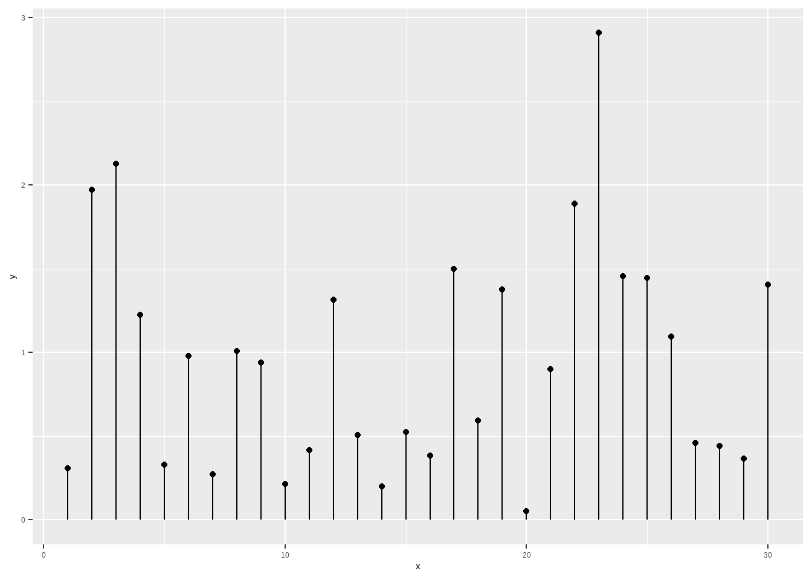
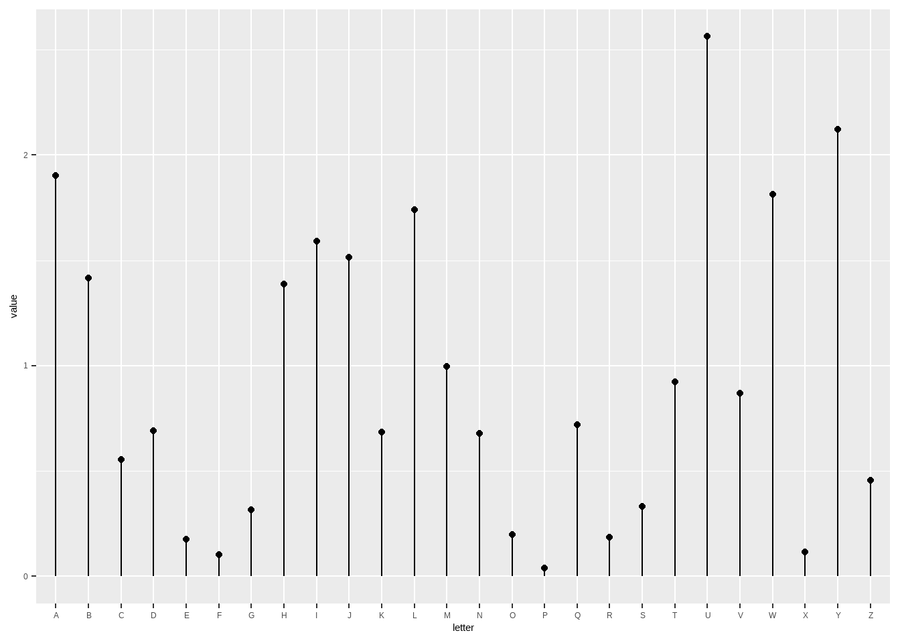
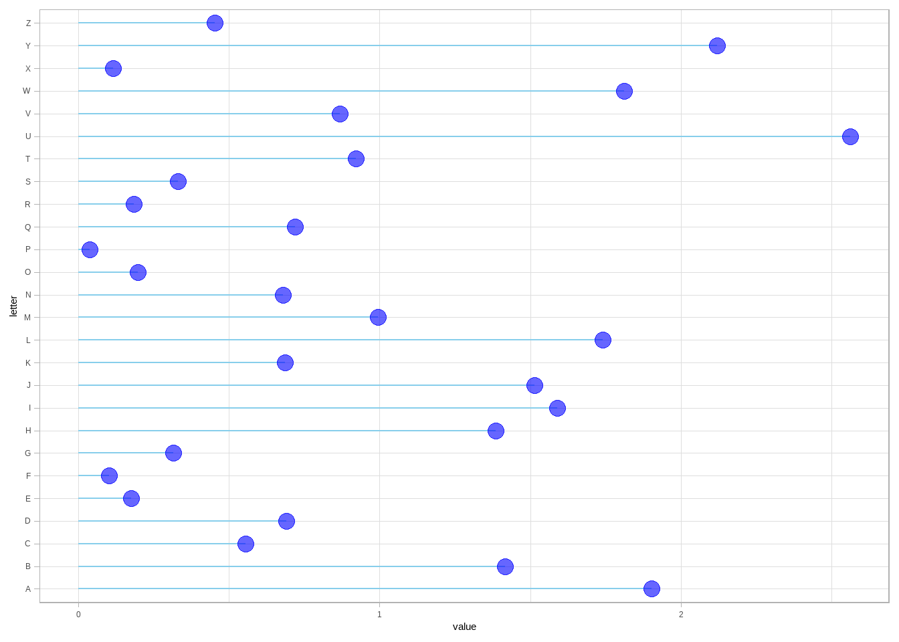
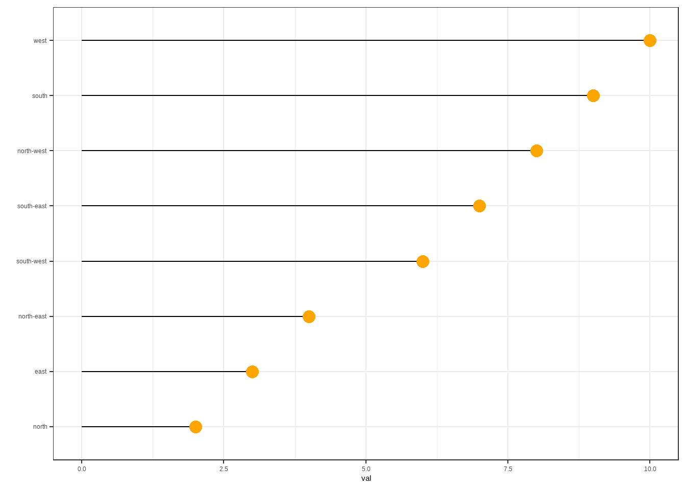
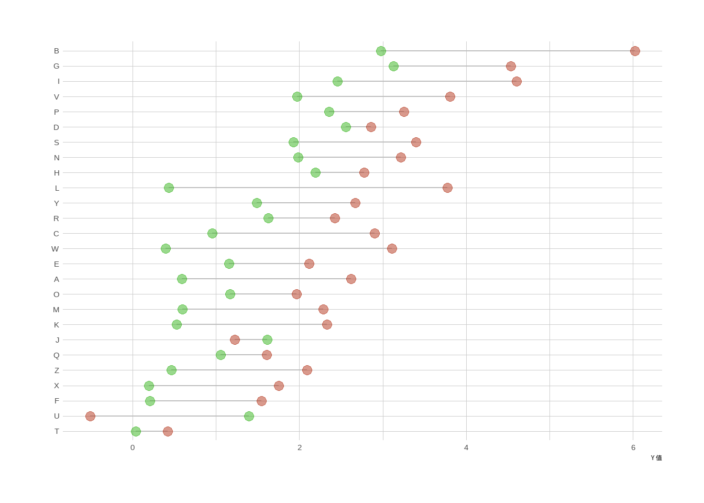
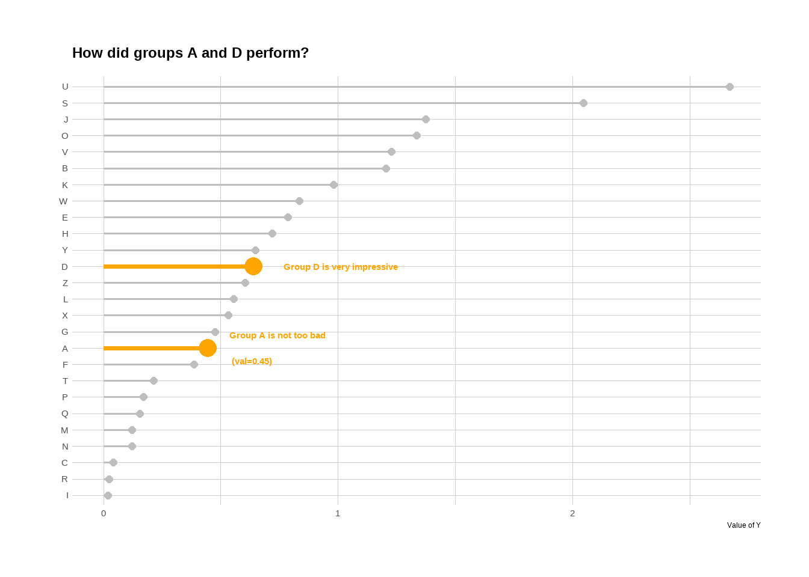
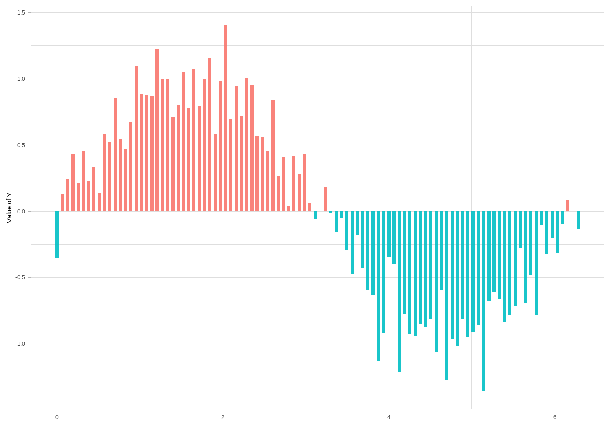

Show/Hide Code
library(tidyverse)
library(hrbrthemes)
library(patchwork)
showtext::showtext.auto() library(tidyverse)
library(hrbrthemes)
library(patchwork)
showtext::showtext.auto() Lollipop plot 本质上是bar plot 的变种，主要用于展示 分类变量 vs 数值变量 的关系。
这里有一个例子，展示了 2017 年 20 个最大出口国出口的武器数量：
# 读取数据：从指定的 csv 文件读取数据
data <- read_csv("https://raw.githubusercontent.com/holtzy/data_to_viz/master/Example_dataset/7_OneCatOneNum.csv")
# 绘制 Lollipop 图
data |>
filter(!is.na(Value)) |> # 过滤掉 Value 为 NA 的行
arrange(Value) |> # 按 Value 升序排列
tail(20) |> # 取出 Value 最大的 20 个国家
mutate(Country = factor(Country, Country)) |> # 保持国家顺序
ggplot(aes(y = Country, x = Value)) + # 设置 x, y 轴
geom_segment(
# 绘制竖线（lollipop 的“棒”）
aes(x = 0, y = Country, xend = Value, yend = Country),
color = "grey"
) +
geom_point(size = 3, color = "#69b3a2") + # 绘制点（lollipop 的“糖”）
theme_ipsum() + # 使用 hrbrthemes 包的主题
theme(
panel.grid.minor.y = element_blank(), # 去除次要网格线
panel.grid.major.y = element_blank(), # 去除主要网格线
legend.position = "none" # 不显示图例
) +
labs(
y = "",
x = "武器出口数量",
)与条形图相比, 有多个高度相同的条形时，Lollipop plot 特别有用：可以避免出现 cluttered 图形和摩尔效应。
# 构造一个包含 20 个分组和对应数值的数据框
don <- data.frame(
group = LETTERS[1:20], # 分组名称为 A~T
val = 20 + rnorm(20) # 每组的数值为 20 加上正态分布噪声
)
# 绘制条形图（Bar Plot）
p1 <- don |>
arrange(val) |> # 按数值升序排列
mutate(group = factor(group, group)) |> # 保持分组顺序
ggplot(aes(x = group, y = val)) + # 设置 x, y 轴
geom_bar(stat = "identity", fill = "#69b3a2") + # 绘制条形
coord_flip() + # 翻转坐标轴，使分组在 y 轴
theme_ipsum() + # 使用 hrbrthemes 包的主题
theme(
panel.grid.minor.y = element_blank(), # 去除次要网格线
panel.grid.major.y = element_blank(), # 去除主要网格线
legend.position = "none" # 不显示图例
) +
xlab("") + # 不显示 x 轴标签
ylab("Weapon quantity (SIPRI trend-indicator value)") # 设置 y 轴标签
# 绘制棒棒糖图（Lollipop Plot）
p2 <- don |>
arrange(val) |> # 按数值升序排列
mutate(group = factor(group, group)) |> # 保持分组顺序
ggplot(aes(x = group, y = val)) + # 设置 x, y 轴
geom_segment(aes(x = group, xend = group, y = 0, yend = val), color = "grey") + # 绘制竖线（棒棒糖的“棒”）
geom_point(size = 3, color = "#69b3a2") + # 绘制点（棒棒糖的“糖”）
coord_flip() + # 翻转坐标轴
theme_ipsum() + # 使用 hrbrthemes 包的主题
theme(
panel.grid.minor.y = element_blank(), # 去除次要网格线
panel.grid.major.y = element_blank(), # 去除主要网格线
legend.position = "none" # 不显示图例
) +
xlab("") + # 不显示 x 轴标签
ylab("Weapon quantity (SIPRI trend-indicator value)") # 设置 y 轴标签
# 并排显示条形图和棒棒糖图
p1 + p2
两组比较非常优雅:
# 构造数据：生成 26 个分组（A~Z），每组有两个数值 value1 和 value2
value1 <- abs(rnorm(26)) * 2 # 生成 26 个正态分布的随机数，取绝对值并放大
don <- data.frame(
x = LETTERS[1:26], # 分组名称为 A~Z
value1 = value1, # 第一组数值
value2 = value1 + 1 + rnorm(26, sd = 1) # 第二组数值，在 value1 基础上加 1 并加噪声
) |>
rowwise() |>
mutate(mymean = mean(c(value1, value2))) |> # 计算每组的均值
arrange(mymean) |> # 按均值升序排列
mutate(x = factor(x, x)) # 保持分组顺序
# 绘制两组比较的棒棒糖图
ggplot(don) +
# 绘制两组数值之间的线段（灰色，表示两组的差异）
geom_segment(aes(x = x, xend = x, y = value1, yend = value2), color = "grey") +
# 绘制第一组的点（绿色）
geom_point(aes(x = x, y = value1), color = rgb(0.2, 0.7, 0.1, 0.8), size = 3) +
# 绘制第二组的点（红色）
geom_point(aes(x = x, y = value2), color = rgb(0.7, 0.2, 0.1, 0.8), size = 3) +
coord_flip() + # 翻转坐标轴，使分组在 y 轴
theme_ipsum() + # 使用 hrbrthemes 包的主题
theme(
legend.position = "none", # 不显示图例
panel.border = element_blank() # 去除面板边框
) +
xlab("") + # 不显示 x 轴标签
ylab("Y 值") # 设置 y 轴标签当子组数量在 3 到~7 之间时，这种类型的棒棒糖图也很不错：
# 构造数据：每个分组有 6 个子组，共 4 个分组（grp1~grp4），每个子组有一个数值 val
value1 <- abs(rnorm(6)) * 2 # 生成 6 个正态分布的随机数，取绝对值并放大
don <- data.frame(
x = LETTERS[1:24], # 子组名称为 A~X
val = c(
value1, # grp1 的数值
value1 + 1 + rnorm(6, 14, 1), # grp2 的数值，在 value1 基础上加 1 和噪声
value1 + 1 + rnorm(6, sd = 1), # grp3 的数值，在 value1 基础上加 1 和噪声
value1 + 1 + rnorm(6, 12, 1) # grp4 的数值，在 value1 基础上加 1 和噪声
),
grp = rep(c("grp1", "grp2", "grp3", "grp4"), each = 6) # 分组标签
) |>
arrange(val) |> # 按数值升序排列
mutate(x = factor(x, x)) # 保持子组顺序
# 绘制分面棒棒糖图，每个分面对应一个分组
ggplot(don) +
geom_segment(aes(x = x, xend = x, y = 0, yend = val), color = "grey") + # 绘制竖线（棒棒糖的“棒”）
geom_point(aes(x = x, y = val, color = grp), size = 3) + # 绘制点（棒棒糖的“糖”），不同分组不同颜色
coord_flip() + # 翻转坐标轴，使子组在 y 轴
theme_ipsum() + # 使用 hrbrthemes 包的主题
theme(
legend.position = "none", # 不显示图例
panel.border = element_blank(), # 去除面板边框
panel.spacing = unit(0.1, "lines"), # 分面间距
strip.text.x = element_text(size = 8) # 分面标题字体大小
) +
xlab("") + # 不显示 x 轴标签
ylab("Value of Y") + # 设置 y 轴标签
facet_wrap(~grp, ncol = 1, scale = "free_y") # 按分组分面显示，每列一个分组，y 轴自适应注意:
ggplot2geom_point() 表示棒棒糖的糖，使用 geom_segment() 表示棒棒糖的棒。
两个数值变量:
data <- data.frame(x = seq(1, 30), y = abs(rnorm(30)))
ggplot(data, aes(x = x, y = y)) +
geom_point() +
geom_segment(aes(x = x, y = 0, xend = x, yend = y)) # 起始点的坐标
分类变量 vs 数值变量:
data <- data.frame(
letter = LETTERS[1:26],
value = abs(rnorm(26))
)
ggplot(data, aes(x = letter, y = value)) +
geom_point() +
geom_segment(aes(x = letter, y = 0, xend = letter, yend = value))
ggplot(data, aes(x = letter, y = value)) +
geom_segment(aes(x = letter, y = 0, xend = letter, yend = value)) +
geom_point(
size = 5,
color = "red", # 设置点边框的颜色
fill = alpha("orange", 0.3), # 使用 alpha 函数设置填充颜色的透明度
alpha = 0.7,
shape = 21,
stroke = 2
)ggplot(data, aes(x = letter, y = value)) +
geom_segment(
aes(x = letter, y = 0, xend = letter, yend = value),
size = 1,
color = "blue",
linetype = "dotdash"
) +
geom_point()ggplot(data, aes(x=letter, y=value)) +
geom_segment( aes(x=letter, xend=letter, y=0, yend=value), color="grey") +
geom_point( color="orange", size=4) +
theme_light() +
theme(
panel.grid.major.x = element_blank(),
panel.border = element_blank(),
axis.ticks.x = element_blank()
) +
xlab("") +
ylab("Value of Y")通过改变 x = 和 y = 的映射，可以创建水平棒棒糖图。
ggplot(data, aes(x = value, y = letter)) +
geom_segment(aes(x = 0, y = letter, xend = value, yend = letter), color = "skyblue") +
geom_point(color = "blue", size = 4, alpha = 0.6) +
theme_light()
只需要改变 geom_segment() 映射即可。
ggplot(data, aes(x = letter, y = value)) +
geom_segment(aes(x = letter, y = 1, xend = letter, yend = value), color = "grey") +
geom_point(color = "orange", size = 4) +
theme_light() +
theme(
panel.grid.major.x = element_blank(),
panel.border = element_blank(),
axis.ticks.x = element_blank()
) +
xlab("") +
ylab("Value of Y")fct_reorder() 可以用于对分类变量进行排序。
data <- data.frame(
name = c(
"north",
"south",
"south-east",
"north-west",
"south-west",
"north-east",
"west",
"east"
),
val = sample(seq(1, 10), 8)
)
# 使用 fct_reorder 对 name 进行升序排序
ggplot(data, aes(x = fct_reorder(name, val), y = val)) +
geom_segment(aes(xend = name, yend = 0)) +
geom_point(size = 4, color = "orange") +
coord_flip() +
theme_bw() +
xlab("")
# 生成数据：26 个分组（A~Z），每组有两个数值 value1 和 value2
value1 <- abs(rnorm(26)) * 2 # 生成 26 个正态分布的随机数，取绝对值并放大
data <- data.frame(
x = LETTERS[1:26], # 分组名称为 A~Z
value1 = value1, # 第一组数值
value2 = value1 + 1 + rnorm(26, sd = 1) # 第二组数值，在 value1 基础上加 1 并加噪声
)
# 使用每组均值对数据进行排序，便于图形展示
data <- data |>
rowwise() |>
mutate(mymean = mean(c(value1, value2))) |> # 计算每组的均值
arrange(mymean) |> # 按均值升序排列
mutate(x = factor(x, x)) # 保持分组顺序
# 绘制哑铃图
ggplot(data) +
# 绘制两组数值之间的线段（灰色，表示两组的差异）
geom_segment(
aes(x = x, xend = x, y = value1, yend = value2),
color = "grey"
) +
# 绘制第一组的点（绿色）
geom_point(
aes(x = x, y = value1),
color = rgb(0.2, 0.7, 0.1, 0.5),
size = 3
) +
# 绘制第二组的点（红色）
geom_point(
aes(x = x, y = value2),
color = rgb(0.7, 0.2, 0.1, 0.5),
size = 3
) +
coord_flip() + # 翻转坐标轴，使分组在 y 轴
theme_ipsum() + # 使用 hrbrthemes 包的主题
theme(
legend.position = "none", # 不显示图例
) +
xlab("") + # 不显示 x 轴标签
ylab("Y 值") # 设置 y 轴标签
# 创建数据
set.seed(1000)
data <- data.frame(
x = LETTERS[1:26], # 分组名称为A~Z
y = abs(rnorm(26)) # 每组的数值为正态分布的绝对值
)
# 对数据按y值升序排序，并保持x的顺序
data <- data |>
arrange(y) |>
mutate(x = factor(x, x))
# 绘制棒棒糖图
p <- ggplot(data, aes(x = x, y = y)) +
# 绘制“棒”，高亮A组和D组
geom_segment(
aes(x = x, xend = x, y = 0, yend = y),
color = ifelse(data$x %in% c("A", "D"), "orange", "grey"), # A和D为橙色，其余为灰色
size = ifelse(data$x %in% c("A", "D"), 1.3, 0.7) # A和D加粗
) +
# 绘制“糖”，高亮A组和D组
geom_point(
color = ifelse(data$x %in% c("A", "D"), "orange", "grey"), # A和D为橙色，其余为灰色
size = ifelse(data$x %in% c("A", "D"), 5, 2) # A和D加大
) +
theme_ipsum() + # 使用hrbrthemes包的主题
coord_flip() + # 翻转坐标轴，分组在y轴
theme(
legend.position = "none" # 不显示图例
) +
xlab("") + # 不显示x轴标签
ylab("Value of Y") + # 设置y轴标签
ggtitle("How did groups A and D perform?") # 设置标题
# 添加注释文本，突出A组和D组
p +
annotate(
"text",
x = grep("D", data$x), # D组的位置
y = data$y[which(data$x == "D")] * 1.2, # D组y值的1.2倍
label = "Group D is very impressive", # 注释内容
color = "orange", # 注释颜色
size = 4, # 字体大小
angle = 0, # 角度
fontface = "bold", # 加粗
hjust = 0 # 左对齐
) +
annotate(
"text",
x = grep("A", data$x), # A组的位置
y = data$y[which(data$x == "A")] * 1.2, # A组y值的1.2倍
label = paste(
"Group A is not too bad\n (val=",
data$y[which(data$x == "A")] |> round(2),
")",
sep = ""
), # 注释内容，包含A组的数值
color = "orange", # 注释颜色
size = 4, # 字体大小
angle = 0, # 角度
fontface = "bold", # 加粗
hjust = 0 # 左对齐
)
# 生成数据：x为0到2π的100个等间隔点，y为sin(x)加上正态噪声
x <- seq(0, 2*pi, length.out=100)
data <- data.frame(
x = x,
y = sin(x) + rnorm(100, sd = 0.2)
)
# 添加一列mycolor，根据y值正负分类
data <- data |>
mutate(mycolor = ifelse(y > 0, "type1", "type2"))
# 绘制棒棒糖图
ggplot(data, aes(x = x, y = y)) +
# 绘制“棒”，根据mycolor着色
geom_segment(
aes(x = x, xend = x, y = 0, yend = y, color = mycolor),
size = 1.3,
alpha = 0.9
) +
theme_light() + # 使用浅色主题
theme(
legend.position = "none", # 不显示图例
panel.border = element_blank() # 去除面板边框
) +
xlab("") + # 不显示x轴标签
ylab("Value of Y") # 设置y轴标签